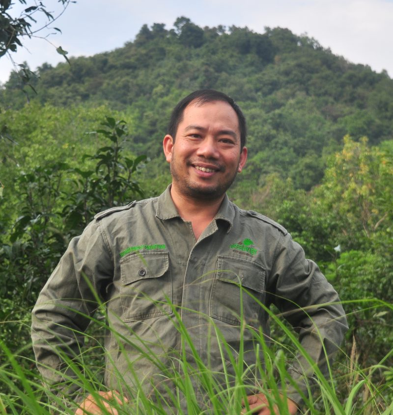
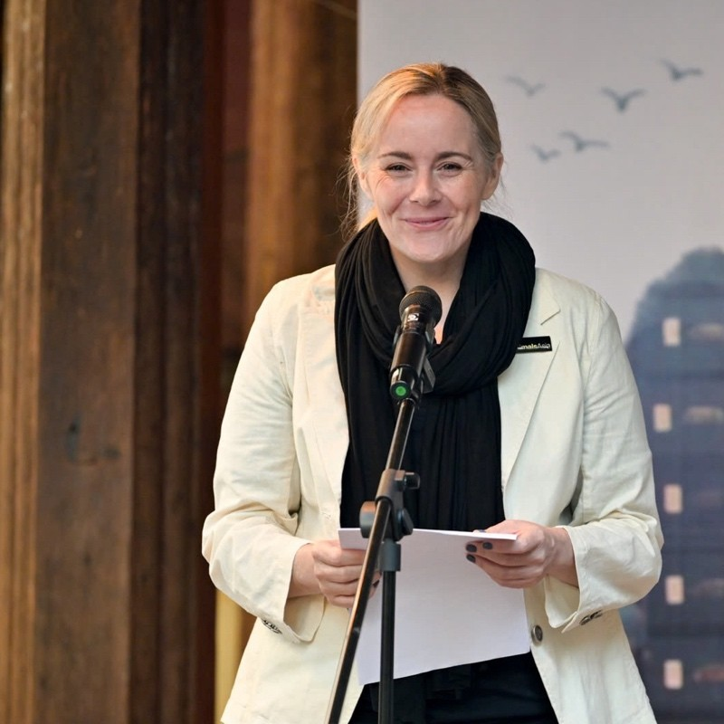

VI
VI


Long is the Country Representative of the Frankfurt Zoological Society. He has started working in conservation since 1999, at the Endangered Primate Rescue Centre in Cuc Phuong National Park, Vietnam. In 2009, Long finished his PhD in Animal Ecology at the University of Cambridge, England. In 2012, he co-founded GreenViet, a non-profit organization working to conserve important ecosystems and endangered species in the Central and Central Highlands regions. Since 2022, he has participated in the management board of the Vietnam Conservation Fund to support local CSOs to expand their impact in conservation. He joins WildAct’s Board of Governors in 2023 to provide technical and fundraising support for WildAct, especially regarding strategic planning, advocacy, species and habitat conservation.


WILDACT – TURNING HOPE INTO ACTION
Hi, I am Dr. Trang Nguyen, the Founder of WildAct.
When I was eight years old, I accidentally witnessed the brutal reality of bear bile farming in my neighborhood – a bear’s bile was being extracted right before my eyes. That harrowing moment ignited a deep sense of motivation, determination, and courage within me. I made a promise to that bear:
“I MUST DO SOMETHING TO END WILDLIFE EXPLOITATION”


Back in the early 1990s, biodiversity conservation was a relatively unknown concept in Vietnam, which made my journey even more challenging. I faced obstacles – my family’s disapproval, language barriers, and gender inequality. But I refused to give up. I worked hard, and against all odds, I secured a fully funded scholarship to pursue a bachelor’s degree in wildlife conservation in the United Kingdom. From there, my passion only grew stronger. I went on to earn two master’s degrees and a doctorate in biodiversity management.
But life had other plans. In 2013, while studying at Cambridge, I was diagnosed with bowel cancer. Fearing I wouldn’t live to fulfill the promise I made to that bear as a child. “If not now, then when?” I asked myself. I knew I couldn’t wait any longer – I had to take action. I founded WildAct, a Vietnamese non-profit organisation dedicated to making wildlife conservation more accessible to everyone. Through WildAct, I’ve created opportunities for people of all ages and backgrounds to protect nature and be part of something bigger.
Along the way, my work has been recognized on a global scale. I am honored to have received prestigious awards such as the Future for Nature Award in the Netherlands, the Princess of Girona Award in Spain, and most recently, the British Council Study UK Alumni Award for Science and Sustainability. I was also named one of the BBC’s 100 Most Influential Women and included in Forbes Asia’s 30 Under 30. One of my proudest moments was being featured in BBC’s Planet Earth III, where Sir David Attenborough recognised me as one of his six conservation heroes.
Beyond my conservation efforts, I want to inspire younger generations to connect with nature and wildlife. That’s why I’ve written children’s books like Saving Sorya: Chang and the Sun Bear and Saving H’Non: Chang and the Elephant. These stories carry my message of love for nature, and I’m thrilled that they have been translated into over 10 languages and published worldwide, allowing young readers everywhere to discover the magic of wildlife.
It’s been a long journey, but I’ve never forgotten that eight-year-old girl who just wanted to help a bear.
“AND THE TRUTH IS, I CAN’T DO IT ALONE”
Protecting wildlife is something we all have a part in. So if you’ve ever felt the same way – if you’ve ever looked at nature and thought, “I wish I could do something” – know that you can.
WildAct is here because of people who believe in change. If you’d like to be part of that journey, we’d love to have you with us.

OUR MISSION & VISION
BOARD OF DIRECTORS

HA THANG LONG, PhD
Country Representative Frankfurt Zoological Society

HEIDI QUINE, MSc
Director of Bear and Vet Department
Heidi is the Director of the Veterinary and Bears Care Department for the Vietnam Bear Rescue Centre within Animals Asia. She is a strategic leader and media spokesperson with 22+ years of experience in the welfare and conservation sector. Heidi’s expertise is varied including strategic planning & execution, programme development, capacity building, team development & management, change management, compliance, reporting & budgeting, training & development, and strategic communication & partnerships. In 2018, Heidi completed her MSc degree in International Animal Welfare, Ethics and Law from the University of Edinburgh and currently completing my MBA in Human Resources through the Australian Institute of Business. Her leadership is centred on the notion that “happy people means happy animals.” Joining WildAct as a governing board member, Heidi expects to contribute her diverse expertise to strengthening WildAct governance, improving team leadership and capacity, as well as introducing potential fundraising and partnership.
JOSH KEMPINSKI, MSc
Wildlife and Natural Heritage Advisor
Josh has currently worked as the advisor to the Wild & Natural Heritage Department of the Royal Commission for AlUla, in Saudi Arabia. Before that, Josh worked on species conservation and protected area management in Vietnam between 2004 and 2022, mostly with Fauna & Flora International (FFI). During that time, he also worked on climate/nature synergies in protected areas, mangrove systems, REDD+, and energy policy (mainly hydro-dams). He has been involved with various conservation and forest carbon/carbon market analysis projects in Vietnam, Indonesia, Cambodia, Australia, England, Tanzania and Mozambique. Josh finished his MSc degree in Ecological Management at Imperial College, London, England in 2004. Josh expects to provide technical support for WildAct in strategic planning, legality, governance, and assist WildAct to expand its influence at the regional and global levels.
HUMANS OF WILDACT

PHAN THI HUONG GIANG
Finance Management Coordinator
I had the opportunity to work as an accountant at WildAct Vietnam for over a year, so I was truly impressed with the Center’s conservation efforts. During my time there, I learned about the wildlife in Vietnam, such as Muntiacus vagueness, which is endemic in Chu Yang Sin National Park, and the Calidris pygmaea, a migratory birds that stops in Vietnam… both of which I had never known about before. This experience has positively influenced me and helps spread awareness of wildlife protection to my friends and those around me.
Thank you to WildAct for your invaluable work in preserving wildlife in Vietnam.
TRAN THI YEN
Operations Management Coordinator
Conservation is more than a job – it is a journey deeply connected to nature, wildlife, and people. In my eighth year, I have witnessed the dedication of colleagues who brave challenges to protect the wild.
Each day is more than reports; it is about researchers’ perseverance, patrol teams’ commitment, and the silent sacrifices behind the scenes. I admire them – those who trek forests to safeguard nature and educators spreading conservation messages.
For me, this job is not merely about coordination—it is a commitment to support those on the frontlines of conservation, ensuring they can focus on their mission with confidence, knowing that a strong operational system stands behind them.

LE THU HA
Public Relations and Fundraising Coordinator
Joining WildAct in late 2023, I realized that fundraising for conservation is more than just securing resources – it’s about turning dry numbers into vivid images, helping the public understand and truly feel the meaning of conservation.
To capture this reality, we chose to step into it ourselves, listening, observing, and recording every moment. On a rugged survey trip, I interviewed a H’Mong member of our community conservation team and felt the weight of his journey: the freezing nights, the treacherous forest treks, and the tense encounters with loggers.
These stories reshaped my view of conservation communications. It’s not just about storytelling – it’s about forging emotional connections and bringing unsung efforts closer to the community. From that moment, writing was no longer just a job but a calling – to share, inspire, and move more people to stand for nature.